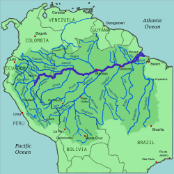
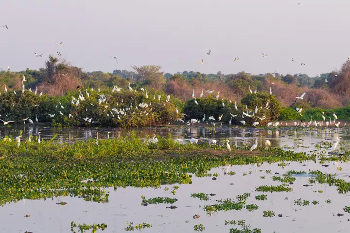
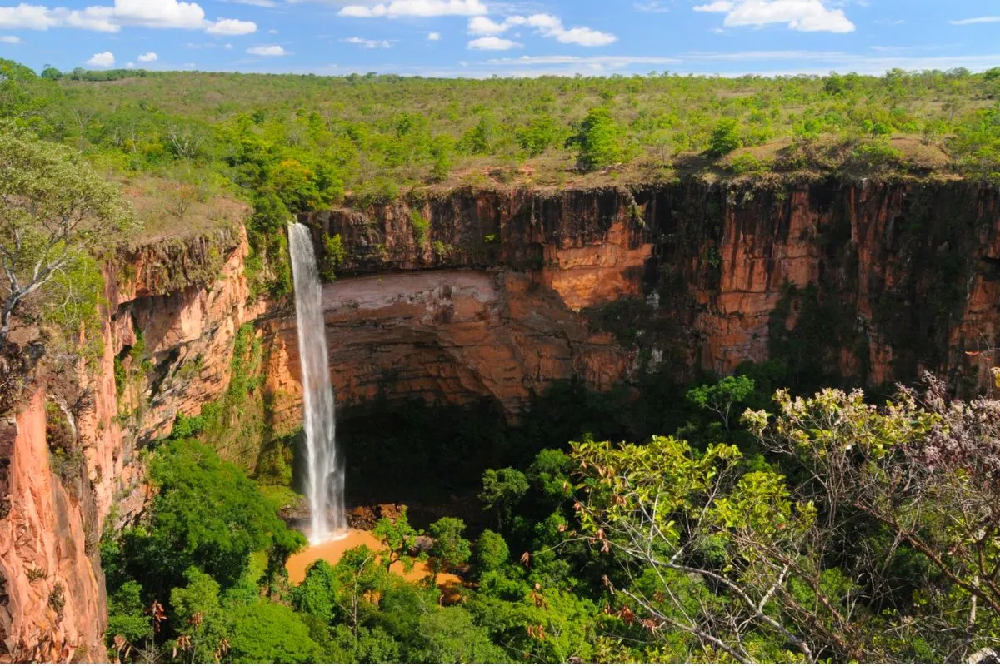
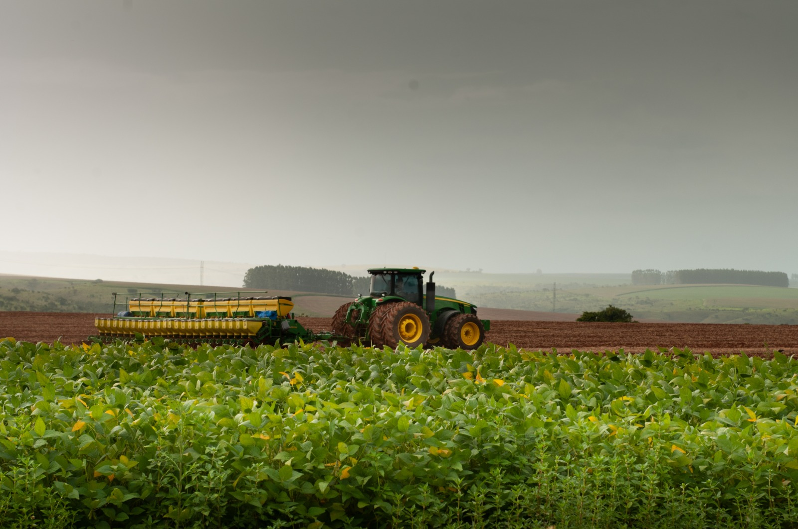
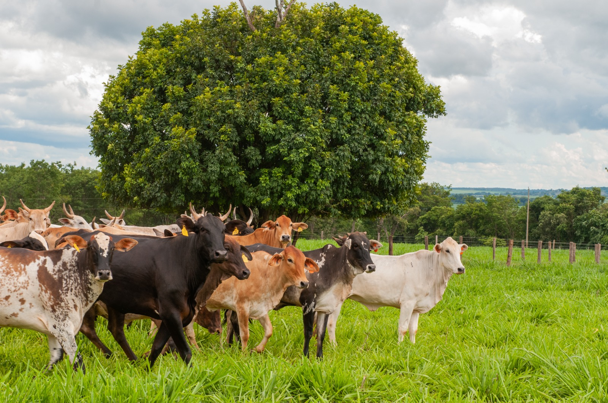

Região Norte do Brasil
A região Norte do Brasil é a maior região do país em extensão territorial. É mundialmente conhecida por abrigar a vasta Floresta Amazônica, rios de grandes proporções e uma rica diversidade cultural e biológica.
Estados que compõem a região:
- Acre
- Amapá
- Amazonas
- Pará
- Rondônia
- Roraima
- Tocantins

Rio Azuis (Tocantins) – Menor rio do Brasil

Rio Amazonas – Maior rio em volume de água do mundo
Curiosidades Geográficas
O Imponente Rio Amazonas
O Rio Amazonas é o maior rio em vazão de água da Terra e o segundo mais extenso do mundo (com 6.992,06 km). Suas águas equivalem a cerca de 20% de toda a água doce líquida do planeta. Ele nasce nos Andes peruanos e entra no Brasil com o nome de Solimões, tornando-se o Amazonas após o famoso "Encontro das Águas" com o Rio Negro, em Manaus.
Saiba mais sobre o Rio AmazonasO Curioso Rio Azuis
Em contraste com o Amazonas, a região Norte abriga o Rio Azuis, localizado no estado do Tocantins. Com apenas 147 metros de extensão, é considerado o menor rio do Brasil e do mundo. Apesar do tamanho, possui uma incrível vazão de 11 mil litros de água cristalina por segundo.
Saiba mais sobre o Rio AzuisGeografia e Sociedade
A região abriga a maior parte da Floresta Amazônica, ocupando 3.850.593,1 km² do território nacional e fazendo fronteira com sete países sul-americanos.

Mapa da Bacia e Floresta Amazônica

Aspectos Culturais e Naturais do Norte
Características Gerais
Clima
Predomina o clima Equatorial, caracterizado por altas temperaturas, elevada umidade e chuvas abundantes ao longo de todo o ano.
Cultura e Culinária
Possui forte influência indígena, europeia e africana. Destaque para a culinária rica com ingredientes nativos, como o tacacá, a maniçoba e o pato no tucupi.
Economia
Baseia-se no extrativismo vegetal e mineral, além do setor agropecuário e do Polo Industrial de Manaus.

Região Centro-Oeste do Brasil
A região Centro-Oeste destaca-se por suas vastas planícies, pelo bioma do Cerrado e pela presença do Pantanal. É o coração do agronegócio brasileiro e sede da capital do país, Brasília.
Estados que compõem a região:
- Goiás
- Mato Grosso
- Mato Grosso do Sul
- Distrito Federal

Características Gerais
O Centro-Oeste possui grande biodiversidade e é estratégica tanto para a preservação ambiental quanto para a produção de alimentos no Brasil.
Economia
Líder nacional na produção de grãos (com destaque para a soja e o milho) e detentora do maior rebanho bovino do país.
Cultura
Influenciada pelas tradições pantaneira, sertaneja e indígena. Destaca-se por grandes festas populares como a Festa do Divino e celebrações sertanejas.
Destaques da Região
1. O Pantanal
Com cerca de 150.000 km², o Pantanal é a maior área alagada contínua do planeta, famosa mundialmente pela sua altíssima concentração de fauna e flora.

2. Chapada dos Guimarães
Localizada em Mato Grosso, é famosa por seus impressionantes paredões de arenito, cachoeiras e ecoturismo exuberante.

3. Liderança na Produção Agrícola e Pecuária
Os estados de Mato Grosso e Goiás lideram a produção nacional de soja, enquanto a pecuária bovina é um dos motores econômicos mais fortes da região.

Produção Agrícola

Pecuária Bovina